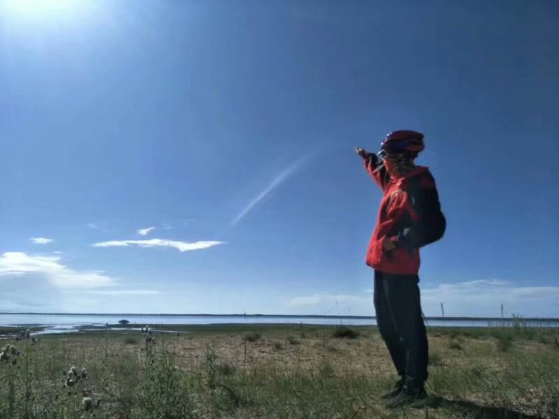
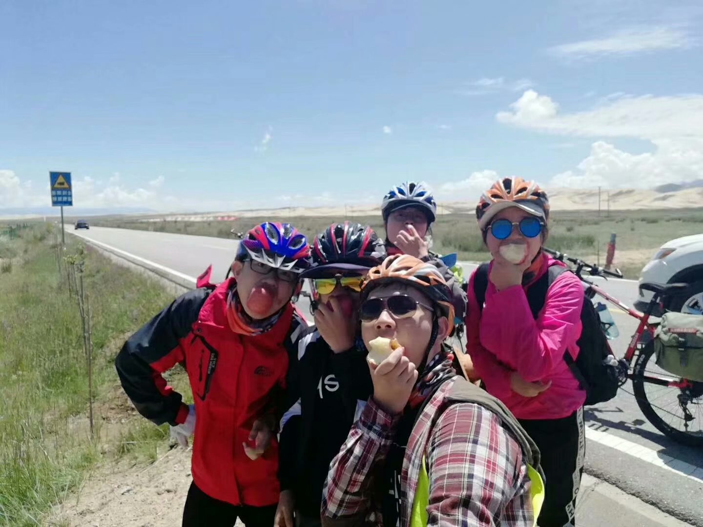

脱离大自然的自我,追寻的是这生活的意义，感受的是这自然的美丽，体验的是这世界的亲切。即使长大了，任然拥有一颗向往童年的心。我爱生活！
计划已久，或说走就走，这都无所谓了。重要的是，我们即将踏上旅途，探索一个新的地方，遇见一些新的朋友。喜悦也好，惋惜也罢，放下吧！出发了！
 我爱这个世界，因为她让我还活着，让我还能看到天空，还能感受大地；这一刻，我的烦恼或惋惜，都放在了空气中和泥土里。随风而去，入土而安！
有时，眼睛会产生幻觉，让我们不知道自己到底是在人间，还是已经在天堂。或许你在人间，周围却是天堂；或许你在天堂，周围却是地狱。随你好了！
这是恰好，还是已安排好，也不重要了。因为这是拥有美、拥有和谐、拥有爱的眼睛发现的。若有这样的眼睛，生活何来悲呢？快哉！
“心旷神怡，宠辱皆忘；把酒临风，其喜洋洋者矣。”
缘分匆忙又珍贵，且行且珍惜。爱情是，友情也是。某个时间，因为某件事情，到了某一地点，留下某张合影。缘分就这样有了，但也许就这样没了。
再美的照片，都需要感谢拍照的人。而拍照的最高境界便是，看似局外人，实则已进入其中。这不仅是拍照的最高境界，也是人生的最高境界啊！
 乐者便是智者，可傻可慧，可悲可乐，也许懂得傻的人，更加自在。独立不可独行，你需要陪伴，不管是爱人的陪伴，亲人的陪伴，还是朋友、书籍的陪伴。
匆忙不是旅行的意义，更不是生命的意义。遇到了美丽的风景，遇到了生活的乐趣，停下来，看看风景，体验乐趣。别让急躁环境扰乱了沉稳的心！